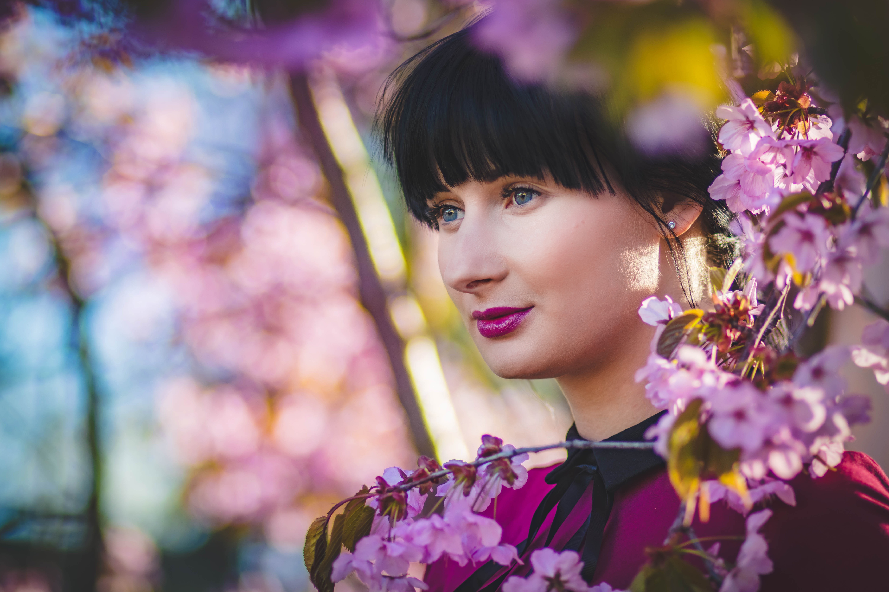

Fashion Trends Hair
Back in 2018, new shades were used, 'baby bangs' were embraced and the buzz cut reformed the red carpet. In 2019, the industry has individualism booming, and these hair trends are predicted to take the world of fashion by storm.
-
Blunt Bobs
This look will bring back the '70s and inspire the revival of the old fashioned bobs. Popular celebrities such as Karlie Kloss and Kendall Jenner will be the ones to highlight this new shorter length which will stand out in 2019. There will be a definite move from we will see a move away from shattered layered hair and people will go for a more blunter and sharper finish. From the mid-length boyfriend bob in 2018, there will be a shift to something even more precise and short right above the shoulder. This hairstyle will suit all face as the blunt’s length can be adjusted so that it can flatter the face. It will also help thicken up hair and soften it. If it is done correctly, it can bring about wonders to the bone structure and you will be able to style in many different ways.
-
Grey hair
The thing that has finally blossomed in the beauty industry is Age-inclusivity which means that not only individuals are dying their hair with a hint of silver but the natural grey is also being embraced fully. The searches for 'going gray' have increased by 879 percent in 2019. If you have a nice colorist then you can work with them to get a natural grey hairline to rock this season. Then finish the look with a glossing service such as DIA Richesse service so that the patchiness is subtly decreased. This look is usually paired with shorter hair so you should consider cutting them as well.
-
Super-straight
Remember the look back in the early nineties, when an army of with poker-straight hair marched on, it's coming back. Either you are going to love it or hate it but its back for sure. In 2019 extremely straight hair will kick the curls and waves out, so everyone should check that their straighteners are working nicely.
-
Adult accessories
Humble hair clips will be replaced by more statement and bold bows and ribbons. This season hair accessory will definitely steal the limelight. It is predicted that sophisticated versions of adult accessories will gain popularity. These accessories will differ in shape and style and would be able to adapt to a multitude of looks. They will be key in 2019 so it is recommended to grab some high-fashion pins along with diamante clips. Gucci hair slides will also be back with a bang to pull off the oh-so-glam look and Crystal-embellished resin slide will also take over the hair trends!
-
At-home color
In the present day, there will be no dishonor in dying your hair at home. The box kits will sell out as colorists botch the job. The release of better home color ranges in 2019 will lead to many females skipping their salon appointments and doing touch up to their roots themselves. As women are becoming time-starved and are in search of better value option, they are shifting towards experimenting with At-home color kits which are quite successful and are changing the trend.
-
Modern top-knots
Top-knots were the hair choice only when you had no time or were too lazy but now after Chanel's Fall 2018 show, they are in fashion. The models rocked the up-do so the 'undone' hair became cool again. But to make this perfect looking imperfect bun is tricky and it is better to tie your hair into a ponytail before knotting it into a bun, to give it a secure feel along with a loose and messy look.
-
Glossy hair
The impossibly shiny 'glass hair' with a smooth finish has begun trending on Instagram and in 2019 it's going to become mainstream. The blow-dry hair with shine serum combed with a round brush to smoothen out the tresses will be the cleanest finish this season.
-
Lilac makeovers
The millennial pink is being replaced by the new emerging pastel hair trend. Especially the search for lilac tresses have increased by 1077 percent. So get ready to see some hair fusion this season.